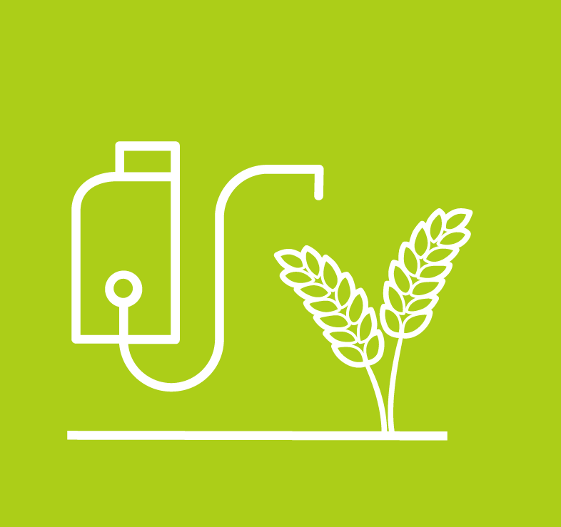

EVALUACIÓN DE LAS CONDICIONES CLIMÁTICAS ACTUALES, MONITOREO DE LABORES Y DESARROLLO DEL CULTIVO
n esta primera herramienta vamos a conocer las condiciones actuales del tiempo de las estaciones de Fedearroz, si me ha llovido el dia de hoy, las temperaturas registradas, humedad relativa presente y la luminosidad. Adicional, el comportamiento hora a hora de los últimos 5 días y el comportamiento día a día del último mes, y la posibilidad de descargar la información histórica que haya registrado la estación desde su instalación.
Con estos datos se puede analizar la efectividad de ciertas aplicaciones, que se hayan hecho en días pasados, ya que podemos ver las condiciones climáticas que precedieron determinada aplicación. Las condiciones climáticas que se presentaron en el cultivo en etapas criticas de desarrollo como la Floración
MONITOREO (ESTACIONES METEREOLÓGICAS)